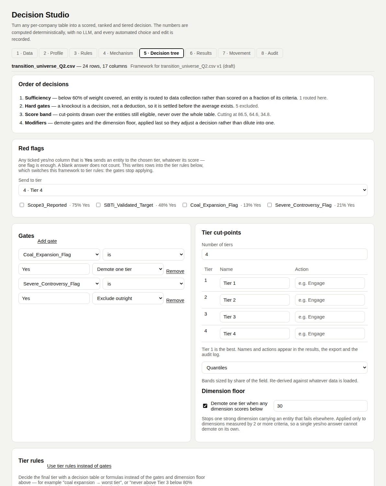

Decision tree
You decideTurns scores into tiers in a fixed order. The order is what makes a result reproducible.
The fixed order
- 1 · SufficiencyWeight covered below the minimum (default 60%) → routed to data collection, not ranked.
- 2 · Hard gatesAn exclude gate removes the entity before any averaging.
- 3 · Score bandCut-points are drawn over the entities still eligible.
- 4 · ModifiersDemote gates and the dimension floor move an entity down.
Gates
A gate is a decision, not a deduction. A blank value never triggers one.
| Operator | Meaning | Works on |
|---|---|---|
| is | equals | Yes/No, text, numbers |
| is not | differs | Yes/No, text, numbers |
| < | below | numbers |
| > | above | numbers |
| = | equals the number | numbers |
| Outcome | Effect |
|---|---|
| Exclude outright | Out of scoring and tiers. Does shift peers' cut-points (it is removed first). |
| Demote one tier | Scored and banded, then moved one tier down. Several demotions stack. |
| Flag only | Tier unchanged; a note is added. |
Cut-points
| Mode | How the lines are drawn |
|---|---|
| Quantile (default) | Evenly between the 20th and 80th percentile. For 4 tiers: 80 / 50 / 20. |
| Natural breaks | At the widest gaps between scores. Each band keeps at least 10% of entities. Too few distinct scores → falls back to quantile, and says so. |
| Fixed | Your numbers. They survive a re-run on new data. Changing the tier count re-spaces them evenly. |
Dimension floor
One strong dimension should not carry an entity that fails elsewhere.
| Setting | Default | Effect |
|---|---|---|
| Enabled | on | |
| Minimum dimension score | 30 | Below it → demoted one tier. |
| Minimum criteria in the dimension | 2 | A dimension resting on one Yes/No answer cannot demote. |
Tiers
Default four, named Tier 1 to Tier 4, with no actions. Tier 1 is the highest score band. Rename them, add or remove tiers, and give each an action.
Tier rules (optional)
A second decision model that replaces steps 2 and 4. Sufficiency and cut-points stay in the engine.
| Available | |
|---|---|
| Inputs | band, score, rank, percentile in cohort, coverage, grounded_coverage, dim_<dimension>, cohort, segment, tier_count, every column. |
| Outputs | tier (1..tier count), optional exclude, optional note. Starts as tier = band. |
| Red flags | Tick Yes/No columns; each becomes a first-placed row sending Yes to a chosen tier with the note Red flag: <column>. |
| Safety | Unevaluable row or out-of-range tier → keeps its band, flagged. Moving an entity up is allowed and flagged. |
In the tool
Screenshots of Decision Studio running on the sample table, taken with the app as it is on main.


Functions applied
What runs at this step, in order, with an example. Blue rows run on GoRules ZEN; the rest is Python in backend/arp/decision/.
| Function | Engine | Example |
|---|---|---|
gate_hit | Python | Severe_Controversy_Flag is Yes → exclude → 5 entities excluded before any score counts. |
derive_cuts | Python | Quantile → [86.5, 64.6, 34.8]. Natural breaks on the same scores → [92.4, 64.6, 45.1]. |
dimension_scores · veto_dimensions | Python | Kestrel Airlines, Climate Lobbying group 3.0 < 30 → Demoted: Climate Lobbying group below 30. |
tier_for_score | Python | Nordwind Energie, score 74.6 → Tier 2. |
apply_tier_graph | GoRules ZEN | Decision table coal_expansion_flag = true → tier 4, 'Red flag: Coal', else band → Vega Power Tier 4 with the note. Tarn Mining, excluded by the gate before, is now Tier 4: tier rules replace the gates. |
Code and formulas
The formula each function applies, and its source as it is in the repository.
gate_hitbackend/arp/decision/tree.py:11–44Yes/No and text: value == target (is) or ≠ (is not). Numbers: <, >, ==. A blank value never hits.
Python source (34 lines)
def gate_hit(rule: GateRule, dataset: Dataset, profiles: dict[str, ColumnProfile], row_index: int) -> bool:
"""Evaluated against the raw cell, never the normalised score -- a gate
is a statement about the world ("this company is expanding coal"), not
about where the entity landed on a scale.
Every type follows the operator and value on screen: `is`/`=` match the
value, `is not` is its negation, `<`/`>` compare numbers. A blank cell
never triggers a gate, whatever the operator -- "no answer" is not
evidence either way.
"""
profile = profiles.get(rule.column)
if profile is None:
return False
raw = dataset.rows[row_index].get(rule.column, "")
if is_blank(raw):
return False
if profile.type == "boolean":
value, target = to_bool(raw), to_bool(rule.value)
if value is None or target is None or rule.op in ("lt", "gt"):
return False
return value != target if rule.op == "isnot" else value == target
if profile.type in ("numeric", "ordinal"):
value = to_number(raw, profile.decimal_comma)
threshold = to_number(rule.value, False)
if value is None or threshold is None:
return False
if rule.op == "lt":
return value < threshold
if rule.op == "gt":
return value > threshold
return value != threshold if rule.op == "isnot" else value == threshold
left = str(raw).strip().lower()
right = str(rule.value).strip().lower()
return left != right if rule.op == "isnot" else left == rightquantile_positionsbackend/arp/decision/tree.py:47–56qᵢ = 0.8 − i × 0.6 ÷ (k − 1) for k cuts, so 4 tiers cut at the 0.8, 0.5 and 0.2 quantiles.
Python source (10 lines)
def quantile_positions(cut_count: int) -> list[float]:
"""Descending quantile positions for `cut_count` cut-points, spread
evenly between the 20th and 80th percentile -- which for the default
four tiers is the 80/50/20 split."""
if cut_count <= 0:
return []
if cut_count == 1:
return [0.5]
step = 0.6 / (cut_count - 1)
return [round(0.8 - i * step, 6) for i in range(cut_count)]_natural_breaksbackend/arp/decision/tree.py:96–113Cut at the k widest gaps between sorted scores, each band holding at least max(1, 10% of n); the cut is the gap's midpoint.
Python source (18 lines)
def _natural_breaks(present: list[float], cut_count: int) -> list[float] | None:
"""Cuts at the widest gaps in the sorted scores, subject to a minimum
band width so a single outlier cannot claim a whole tier to itself."""
min_band = max(1, int(len(present) * _MIN_BAND_SHARE))
gaps = [(present[i] - present[i - 1], i) for i in range(min_band, len(present) - min_band)]
if not gaps:
return None
gaps.sort(key=lambda g: -g[0])
picks: list[int] = []
for _, i in gaps:
if all(abs(p - i) >= min_band for p in picks):
picks.append(i)
if len(picks) == cut_count:
break
if len(picks) < cut_count:
return None
picks.sort(reverse=True)
return [round((present[i] + present[i - 1]) / 2, 1) for i in picks]tier_for_scorebackend/arp/decision/tree.py:116–120tier = 1 + index of the first cut with score ≥ cut; below every cut → the last tier.
Python source (5 lines)
def tier_for_score(score: float, cuts: list[float]) -> int:
for index, cut in enumerate(cuts):
if score >= cut:
return index + 1
return len(cuts) + 1veto_dimensionsbackend/arp/decision/tree.py:140–152Only dimensions with ≥ min_criteria (2) active criteria can demote; a dimension score below min_score (30) demotes one tier.
Python source (13 lines)
def veto_dimensions(config: MechanismConfig, active_columns: list[str]) -> list[str]:
"""Only dimensions measured by at least `veto.min_criteria` criteria
can demote. A dimension resting on one yes/no answer would otherwise
let a single binary field override the whole framework."""
if not config.veto.enabled:
return []
counts: dict[str, int] = {}
by_column = {c.column: c for c in config.criteria}
for column in active_columns:
criterion = by_column.get(column)
if criterion:
counts[criterion.dimension_id] = counts.get(criterion.dimension_id, 0) + 1
return [d.id for d in config.dimensions if counts.get(d.id, 0) >= config.veto.min_criteria]apply_tier_graphbackend/arp/decision/rules.py:232–315The tier graph runs on GoRules ZEN per scored entity, with band, score, rank, dim_* and every column as input; tier, exclude and note come back.
Python source (84 lines)
def apply_tier_graph(
graph: dict[str, Any],
entities: list[EntityDecision],
contexts: list[dict[str, Any]],
bands: list[int | None],
config: MechanismConfig,
) -> list[AuditEntry]:
"""Sets each scored entity's final tier from the graph's `tier` output,
or excludes it on `exclude: true`. A row the graph cannot evaluate, or
whose `tier` is not a whole number in range, keeps its band and is
flagged -- the same policy calculated columns follow."""
tiers_by_rank = {t.rank: t for t in config.tiers}
lowest = max(tiers_by_rank) if tiers_by_rank else 4
targets = [i for i, e in enumerate(entities) if e.status == "scored"]
results = evaluate_rows(graph, [contexts[i] for i in targets])
failures: list[tuple[str, str]] = []
down = up = excluded = 0
for i, result in zip(targets, results, strict=True):
e, band = entities[i], bands[i]
if isinstance(result, str):
failures.append((e.name, result))
e.notes.append("Tier rules could not be evaluated; band kept")
continue
if result.get("exclude") is True:
e.status, e.tier, e.tier_name, e.tier_action = "excluded", None, None, None
e.rank = e.rank_min = e.rank_max = e.leverage = None
e.notes.append("Excluded by tier rules")
excluded += 1
else:
tier = result.get("tier")
if isinstance(tier, bool) or not isinstance(tier, (int, float)) or tier != int(tier) or not 1 <= tier <= lowest:
failures.append((e.name, f"`tier` must be a whole number from 1 to {lowest}, got {tier!r}"))
e.notes.append("Tier rules gave no valid tier; band kept")
continue
tier = int(tier)
if band is not None and tier != band:
e.notes.append(f"Tier rules: band {band} -> {tier}")
down += tier > band
up += tier < band
definition = tiers_by_rank.get(tier)
e.tier, e.tier_name, e.tier_action = (
tier,
definition.name if definition else None,
definition.action if definition else None,
)
note = result.get("note")
if isinstance(note, str) and note.strip():
e.notes.append(note.strip())
audit = [
AuditEntry(
stage="Tier rules",
item=f"{len(targets)} scored entities",
decision=f"{down + up + excluded} changed: {down} moved down, {up} moved up, {excluded} excluded",
why="the framework's tier rules replace the gates and the dimension floor; they ran per entity after the "
"score band was drawn, so an exclusion here does not redraw its peers' cut-points"
+ ("; moving an entity up is allowed but departs from the band the scores support, so it is flagged" if up else ""),
needs_check=up > 0,
)
]
if failures:
name, message = failures[0]
audit.append(
AuditEntry(
stage="Tier rules",
item=f"{len(failures)} of {len(targets)} entities",
decision="band kept",
why=f"no valid `tier` from the tier rules -- first: {name}, {message}",
needs_check=True,
)
)
if config.gates:
audit.append(
AuditEntry(
stage="Tier rules",
item=f"{len(config.gates)} gates",
decision="not applied",
why="a framework with tier rules decides exclusions and demotions there; remove the gates or move them "
"into the tier rules",
needs_check=True,
)
)
return audit